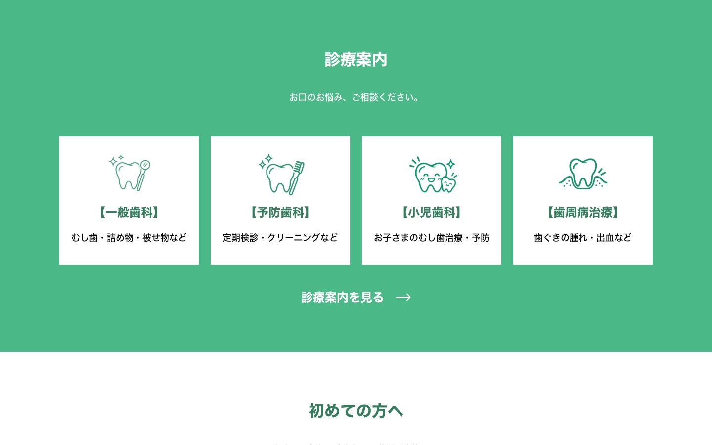
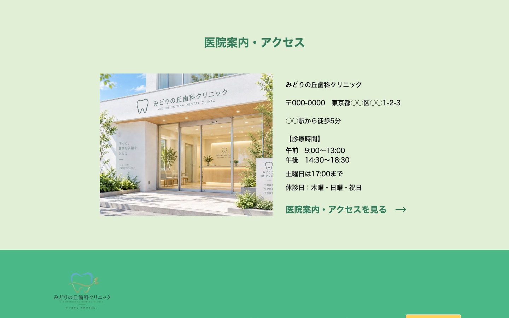

みどりの丘歯科クリニック コーポレートサイト



- 制作区分
- スクール課題
- 制作概要
- 地域の歯科医院「みどりの丘歯科クリニック」のコーポレートサイト（トップページ）。
- 担当範囲
- ワイヤーフレーム、デザイン、コーディング
- デザインの意図
- 清潔感と安心感のあるグリーンを基調にしました。WEB予約のボタンにはイエローを使い、ページ内のどこからでも予約に進みやすいようにしています。
- コーディング
- PC・スマホ対応（レスポンシブ）。ハンバーガーメニューを実装しました。
- 使用ツール
- Figma / HTML / CSS / JavaScript